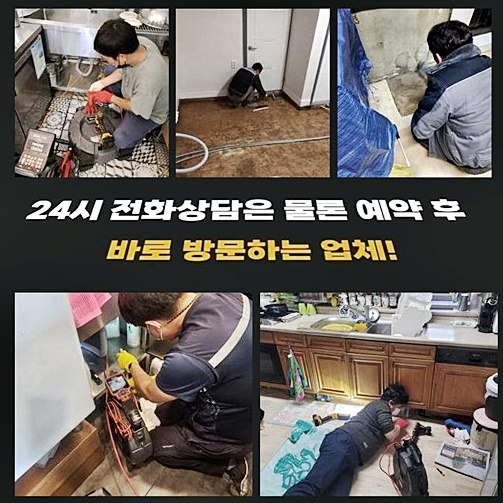
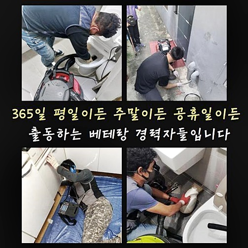
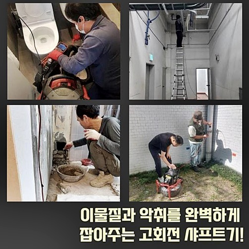
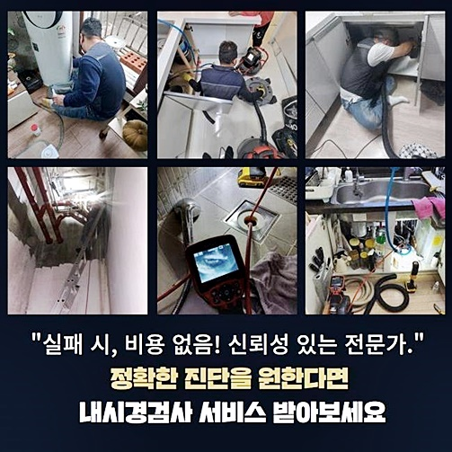
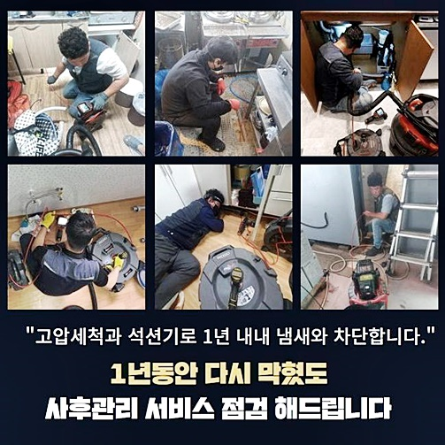
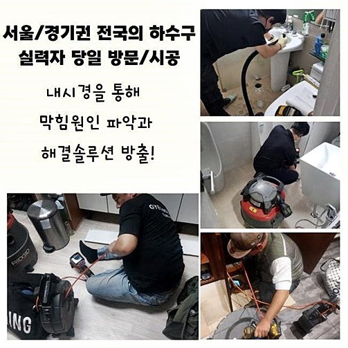

🏠 성남 수진동하수도역류 고등동 배수구뚫기 설비공사
성남 하수구막힘 전문 시공 후기

📋 작업 개요
- 위치: 성남
- 서비스 유형: 하수구막힘, 배관막힘, 역류해결, 뚫는업체, 배관청소, 고압세척, 설비공사, 악취차단
- 작업 일시: 2025. 2. 7. 16:38
- 업체명: 하수구수사대 (010-5615-2118)
🔍 문제 상황
성남 은행동화장실하수구역류 은행동 악취차단 배관설비공사
하수들을 다량 배출시키는 음식점들은 의외로 많은 분들이 물빠짐 정체 현상을 겪으시는데요
당연하겠지만 조리과정 중에 잔해가 배수관으로 배출되고 이로 인해 배수관이 막혀버리고 효과가 있을법한 용품들을 사용한 뒤 뚫리기도하나 얼마못가 문제가 생길거에요
큰 맘 먹고 전문인에게 전화해도 영업자체를 멈춰야하기에 멈칫하게 됩니다
자가조치들을 써서 잠깐동안 증상이 완화되어도 재차 발생되니 이러한 사태를 방지하기위해서는 애초에 확실하게 세척하는것이 중요합니다
며칠전 한 사장님께선 하수들이 배출되지 않아서 영업까지 못한다고 다급히 의뢰를 하셨는데요
서둘러 찾아가 현 상황을 들여다보았습니다
역류증세도 나타나면서 물이 안빠지는것을 넘어 오염물도 솟구쳤어요
하수도에 고착되는 문제가 도래했다는 의미로 생각해도 되겠습니다 무슨 원인인지 체크해봐야 해당 상황에서 벗어날 수 있어요
곧장 내시경기기를 삽입하여 안이 어떻게 된것인지 어떤 구간에 증상이 심해진것인지 살폈습니다
케이블들이 굵지않아 내측에 잔해물이 축적된 작은 하수관에서 활용되죠 배수관 내부엔 수직배관도 보여졌어요
어디든지 무리없이 휘기에 L자로 수직배관도 세심히 확인가능해요

🔎 원인 분석
💡 전문가 진단: 정밀 진단 장비를 사용하여 슬러지의 고착 여부를 판명하고 타격/세척 작업을 실시했습니다.
식당서 이용되는 하수구의 특성 상 눈으로 확인해도 기름때와 이물질의 덩어리들로 얼룩진 상태였는데요
심층부까지 살피니 고압의 분사 청소들이 필요했죠
고객님이 질의를 자주 하는 작업방식인 고압노즐 분사 방식은 저희들이 서둘러서 달려가 문제를 찾아 검수를 거쳐 설명하니 절대적으로 고압노즐 분사방식을 이행하는 무모함은 걱정하지 않으셔도 된다 보장해요!
집수라인도 막혀버린게 확실시 되었으므로 관로탐지장치들을 사용해 어느 배수설비가 말썽인건지 살폈는데요
배수구로 내시경기기를 투입해주어 탐지도구를 가용해요
이 기계를 운용하여 문제의 부위를 체크해볼 수 있어요
일정한 리치가 길지라도 삽입한 케이블들을 통하여 길이들을 유추해보았는데요
그러나 공동관로도는 길기때문에 관로탐지장치들을 써서 알맞은 위치들을 알아내는거죠
막혀버린 지점을 관찰하였더니 바깥부터 내측 라인까지 증상을 내비친 현상을 인지했습니다
간헐적으로라도 하수도가 막히게되며 증세를 심화시킨 이유들은 외부 배수관이 제 기능을 못해서였는데요
기름뭉치가 진흙과같이 배출되었어요
기름자체를 많이 사용하고 있던 식당이기에 주거지와 비교되지 못할만큼 상당량의 기름때들을 목격했어요
꾸준하게 식자재를 취급하고 식기들을 씻는다면 배수관으로 잔해물이 배출되는것은 당연하다고 볼 수 있어요

🔧 작업 과정
증상이 발생되었을 때 선제적으로 대책들을 세운다면 무리없이 사용할 수 있습니다
배수과정이 예사롭지않다면 지속적으로 관리해주셔야해요
같은 맥락으로 기름들을 많이 사용하고 있던 곳이라면 끓고있는 수도를 배수관으로 들이붓고 기름들을 청소하고자하나 적절한 방식이라고 보기 힘듭니다
일차적으로 배수구의 기름때를 제거하여주고 내부부터 천천히 세척을 속행했는데요
이 과정에서는 샤프트장비로 하수관으로 케이블들을 삽입하여 체인들이 돌아가면서 딱딱해진 오염물을 조속히 제거시키는데요
고착물의 경우 사슬부에 걸리게되면서 배출되게됩니다 고압의 청소를 못견딜만큼 내구성이 많이 떨어져있다면 샤프트장비로 이에 달하는 효과를 자아낼 수 있는데요
내부와 외부의 설비에서도 증세가 발생된 모습으로서 동시다발적인 수리가 수행되어야했는데요
바깥에서 내측까지 청소들을 진행해준다면 벽면에 이오수들이 차례대로 떨어져나가면서 물빠짐이 이뤄지게 됩니다
배수관으로 잔해가 상당하여 꾸준히 샤프트장비 노커로 다양한 식자재를 세척했는데요
여태 하수도를 이용하는 와중 냄새가 심각수준이라고 하셨어요 청소가 끝나면 냄새가 생겨나는 불상사는 걱정할 필요가 없어요
외부 배수구로는 크기들도 크며 지속적으로 관리가 안되어 다양한 슬러지가 많았습니다
배수구로 뜰망을 써서 물들을 거르며 작업진행을 해줬습니다
슬러지가 없어지면서 물빠짐이 빨리 이루어지면서 이후엔 이물제거가 훨씬 빠르게 진행되었습니다 집수관로는 보통 배수관에서 빠지는 오수가 이곳에 결집되어 빠지게되죠
그리하여 배관 가운데 한 곳이 막힐 땐 타 부위도 심각하게 막혀버립니다
꾸준하게 샤프트장치와 내시경을 이용해서 시야확보를 거치며 청소해주는데요
내시경장비를 통해서 작업하여 이상이 있는 사항이 있는지 인지하기 수월하답니다
하수도로부터 바깥으로 어이진 배수관을 뚫는데요 탐지기기를 통해서 꼼꼼하게 찾아내어 청소를 진행했습니다
불행 중 다행으로 기름들을 제거해주어 어려움없이 기름때들을 제거했습니다
배수구로 집수라인도 길이들이 더욱 복잡하기에 동시에 장비들을 써서 연결되는 부분에도 청소를 진행시켰어요
안측에도 슬러지들이 존재하진않는지 내시경장치로 체크했습니다 내시경기기로 검수를 거치니 처음과 다르게 이물하나없는 하수관을 확인했습니다


✅ 작업 완료
종료에 앞서 배수관으로 하수들이 빠지는지 체크해봐요
배수체크를 진행하니 하수관으로 빠르게 배출되었습니다 요식업의 경우에는 잔해물이나 식자재로 인하여 배수로가 막히게 됩니다
그리하여 원인을 말끔하게 없애주고 거름망들을 설치하고 이용하면서 오수를 배출시키는 시점에도 주의해야겠습니다
덧붙여 때때로 관리해주시면 배수로가 막히지않고 쓰실 수 있어요
배수관으로 증상이 나타났다면 주저없이 의뢰를 맡겨보세요!




⚠️ 하수구 배관 막힘 예방 및 관리 가이드
- ✅ 머리카락, 비닐, 물티슈 등 물에 분해되지 않는 이물질은 하수구 유입을 절대 금지해 주세요.
- ✅ 하수구 거름망을 씌우고 모여진 이물질은 주기적으로 쓰레기통에 바로 비워주셔야 합니다.
- ✅ 배관 노후가 심할 경우 이물질이 더 쉽게 걸리므로 주기적인 배관 세척(고압세척 등)을 권장합니다.
- ✅ 작업 후 1년 이내 재발 시 하수구수사대에서 무상 A/S 보증 서비스를 제공합니다.
💡 핵심 정리
- 확실한 장비 작업(내시경 점검 및 샤프트 스케일링)으로 원인을 뿌리 뽑습니다.
- 작업 후 1년 이내에 동일한 부위 재발 시 100% 무상 A/S 서비스를 보장합니다.
- 서울 · 경기 · 인천 전 지역에 24시간 언제든 긴급 출동할 수 있도록 항시 대기 중입니다.
❓ 자주 묻는 질문 (FAQ)
🚨 성남 하수구막힘 문제로 고민이신가요?
정확한 원인 진단과 확실한 시공으로 재발 없는 해결을 약속드립니다.
24시간 긴급 출동 | 서울 · 경기 · 인천 전지역 | 1년 내 재발 시 무상 A/S